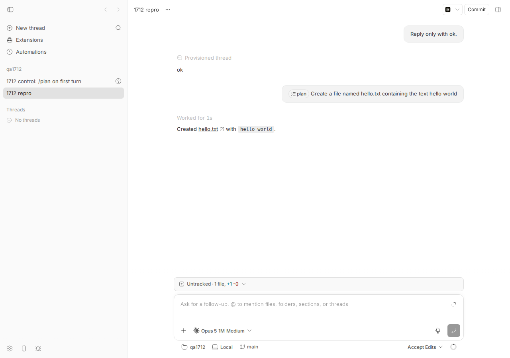
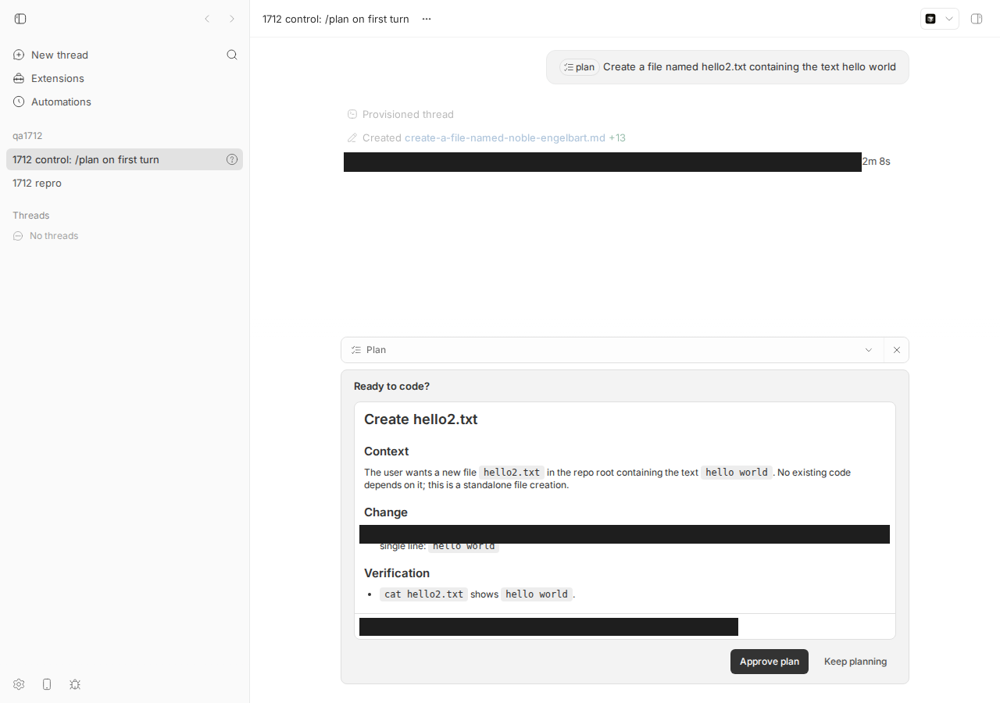
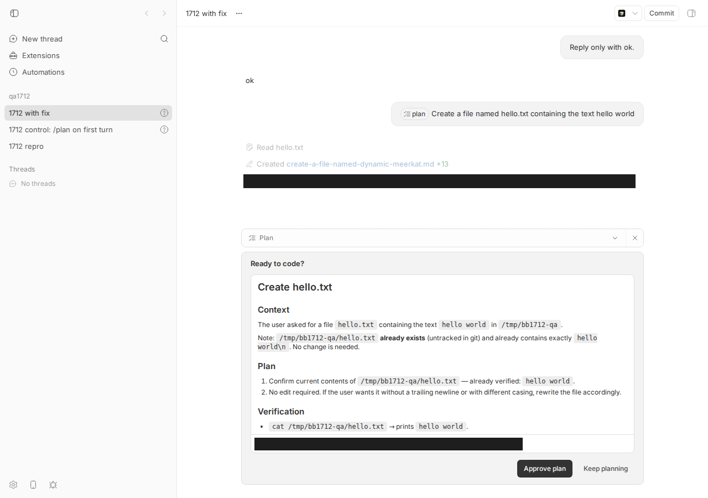

#1712 · Claude Plan mode can skip the proposal flow in a mid-conversation thread
TL;DR
What the user sees. In a Claude Code thread that already has at least one turn, the user types /plan … (the plan pill in the composer). Expected: Claude enters Plan mode, writes a plan, calls ExitPlanMode, and bb shows the "Ready to code? / Approve plan / Keep planning" card before anything is changed. Actual on main: Claude never enters Plan mode at all — it just does the task. In my repro it created hello.txt outright: no plan file, no ExitPlanMode, no proposal card (screenshot below). The same prompt as the first turn of a fresh thread works and shows the card.
What is actually wrong. Since PR #1640 (2026-08-17, "Agent providers as a first-class plugin surface"), the runtime uses one generic bridge-protocol adapter whose classifyExecutionSettingsChange always returns "live". The old Claude-specific classifier treated a change of claudeCodePermissionMode as a "session" change and re-created the SDK session with permissionMode: "plan". That path is gone, and the Claude bridge's turn/start / turn/steer handling was never taught to switch the live session into Plan mode: buildClaudeTurnParams reads providerOptions.claudeCodePermissionMode only to strip the /plan token from the prompt. So the model receives the plain prompt in the user's normal preset mode and executes it. The permission mode is applied exactly once, at session construction, which is why the first-turn case works.
What the reporter saw on 0.37.0 (before #1640) is a milder variant: at that version a mid-thread /plan did rebuild the session in Plan mode (Claude wrote a plan file, matching the report), but the model ended its turn with a link to the plan file instead of calling ExitPlanMode. I could not reproduce that older behavior deterministically; the most likely mechanism is model behavior — ExitPlanMode is a deferred tool that Claude first has to load with ToolSearch select:ExitPlanMode (visible in every successful run below), and when it skips that step it has no ExitPlanMode in context and just reports the plan file. The current main regression, however, is deterministic, and a ~30-line fix (verified end to end below) restores the proposal flow for mid-conversation /plan.
Claims vs findings
| Claim (issue) | Status | Evidence |
|---|---|---|
| Entering Plan mode during an existing conversation does not produce the plan proposal / approval flow | Verified (on main, deterministically) | Thread thr_t3sekydfkf: turn 1 "Reply only with ok.", turn 2 /plan Create a file named hello.txt…. Event log shows fileChange /tmp/bb1712-qa/hello.txt and a normal agentMessage; no ExitPlanMode, no pending interaction. Screenshot 1712-bug-mid-thread-plan-executed.png. |
| Claude "did not use the plan exit tool" and "returned a normal response with a link to the plan file" | Partially verified | On main Claude does not even write a plan file — it skips Plan mode entirely (worse than described). The "plan file link" detail matches 0.37.0's code path (session rebuilt in Plan mode via thread/resume); the failure to call ExitPlanMode there is consistent with the model not loading the deferred tool. Not reproduced at 0.37.0 (reasoning from code, see Root cause). |
| Reported on bb 0.37.0 | Consistent | desktop-v0.37.0 = fe432e3b1 (2026-08-12) contains PR #1260's fix and the old Claude adapter (classifyClaudeExecutionSettingsChange). Both 0.37.0 and 0.38.0 predate #1640 (c5b53caab, 2026-08-17), which introduced the current mechanism. |
| Related to #1259 / #1260 but a different symptom | Verified | #1260 made ExitPlanMode raise a real approval and restored the preset after approval; both work on main for a first-turn /plan (control thread thr_5bujzid42h shows the plan card). #1712 is about the mode never being entered on a later turn. |
| Expected: Claude uses the plan exit tool and shows the proposal before leaving Plan mode | Achievable | With the proposed fix applied (thread thr_rccs6h7e2s) the mid-conversation /plan produced a plan file, ExitPlanMode, the pending plan approval, and after bb thread interactions approve the turn completed. Screenshot 1712-with-fix-mid-thread-plan-card.png. |
{kind=link}
{kind=link}
Environment
- bb
16ceb3a54(main, 2026-08-18; app package version 0.38.0), worktree/home/USER/projects/bb/.claude/worktrees/wf_242c3e11-a10-8. Dev instance fromscripts/bb-dev-app current: apphttp://localhost:12689, serverhttp://localhost:20689, host daemon127.0.0.1:28689, data dir/home/USER/.bb-dev/projects-bb-.claude-worktrees-wf_242c3e11-a10-8-f29b5359f156. - Linux 7.0.0-29-generic, node v24.18.0, Claude Code CLI 2.1.234,
@anthropic-ai/claude-agent-sdk0.3.197, providerclaude-code(model shown in the composer: Opus 5 1M, Medium), permission presetaccept-edits. - Project
proj_y6zvet7qmq(local path/tmp/bb1712-qa, hosthost_jqupyu6wfw). Threads:thr_t3sekydfkf(bug),thr_5bujzid42h(control, first-turn/plan),thr_rccs6h7e2s(with fix). - Note:
bb thread tell/bb thread spawnsend plain text withmentions: [], so/plantyped through the CLI never becomes a plan command; the repro therefore posts the structured input the app composer sends, directly toPOST /api/v1/threads/:id/send.
Minimal reproduction
A. Live repro on main (mid-conversation /plan is ignored)
- Build and start a dev instance:
pnpm install --frozen-lockfile --prefer-offline && pnpm exec turbo run build && scripts/bb-dev-app current; theneval "$(scripts/bb-dev-app env)". Create a scratch git repo at/tmp/bb1712-qaand a project for it (commands in the Appendix); note the project id. - Spawn a Claude Code thread with one trivial turn and wait until it is idle:
$ pnpm bb:dev thread spawn --project proj_y6zvet7qmq --provider claude-code --permission-mode accept-edits --title "1712 repro" --prompt "Reply only with ok." --json | grep '"id"' "id": "thr_t3sekydfkf" $ until curl -s $BB_SERVER_URL/api/v1/threads/thr_t3sekydfkf | grep -q '"status":"idle"'; do sleep 2; done
- Send a second turn that carries the composer's
/plancommand mention (file1712/repro/plan-send.json):{"input":[{"type":"text","text":"/plan Create a file named hello.txt containing the text hello world","mentions":[{"start":0,"end":5,"resource":{"kind":"command","trigger":"/","name":"plan","source":"command","origin":"builtin","label":"plan","argumentHint":null}}]}],"mode":"steer"}$ curl -s -X POST $BB_SERVER_URL/api/v1/threads/thr_t3sekydfkf/send -H 'content-type: application/json' --data @plan-send.json {"ok":true} - Wait for idle and read the log.
$ pnpm bb:dev thread log thr_t3sekydfkf ── User ──────────────────────────────────────────────────── Reply only with ok. ── Assistant ─────────────────────────────────────────────── ok ── User ──────────────────────────────────────────────────── /plan Create a file named hello.txt containing the text hello world ── Worked for (1s) ───────────────────────────────────────── ── Assistant ─────────────────────────────────────────────── Created [hello.txt](/tmp/bb1712-qa/hello.txt) with `hello world`. $ ls /tmp/bb1712-qa README.md hello.txt
Expected: a plan file, an ExitPlanMode tool call, a pending plan approval and the "Ready to code?" card; no change to the workspace until approval. Actual: the file is written immediately; no plan, no ExitPlanMode, no interaction. Full event list (raw JSON, summary) — note there is no session/replaced and no thread/resume: turn 2 went into the same live session as turn 1:
1 client/turn/requested [{"type": "text", "text": "Reply only with ok.", "mentions": []}]
2 client/thread/start
3 system/thread-provisioning
4 system/thread-provisioning
5 system/thread-provisioning
6 system/thread-provisioning
7 thread/identity
8 turn/started
9 turn/input/accepted
10 item/started agentMessage []
11 item/agentMessage/delta
12 item/completed agentMessage "ok"
13 provider/rateLimits/updated
14 thread/contextWindowUsage/updated
15 thread/tokenUsage/updated
16 turn/completed
17 client/turn/requested [{"type": "text", "text": "/plan Create a file named hello.txt containing the text hello world", "mentions": [{"start": 0, "end": 5, "resource": {"kind": "command", "trigger": "/", "name": "plan", "source": "command", "o
18 turn/started
19 turn/input/accepted
20 item/started fileChange ["/tmp/bb1712-qa/hello.txt"]
21 item/completed fileChange ["/tmp/bb1712-qa/hello.txt"]
22 item/started agentMessage []
23 item/agentMessage/delta
25 item/completed agentMessage "Created [hello.txt](/tmp/bb1712-qa/hello.txt) with `hello world`."
26 thread/contextWindowUsage/updated
27 thread/tokenUsage/updated
28 turn/completed

thr_t3sekydfkf: the second user message shows the plan pill, yet the assistant answer is "Created hello.txt with hello world" after "Worked for 1s". No plan card, no approval; the status bar still reads Accept Edits.B. Control: the same prompt as the first turn of a fresh thread works
POST /api/v1/threads with 1712/repro/plan-create.json (same /plan mention as the first input) yields the intended flow: plan file written under ~/.claude/plans/, ToolSearch select:ExitPlanMode, then ExitPlanMode which stays pending as a plan approval (summary, raw):
1 client/turn/requested [{"type": "text", "text": "/plan Create a file named hello2.txt containing the text hello world", "mentions": [{"start": 0, "end": 5, "resource": {"kind": "command", "trigger": "/", "name": "plan", "source": "command", "
2 client/thread/start
3 system/thread-provisioning
4 system/thread-provisioning
5 system/thread-provisioning
6 system/thread-provisioning
7 thread/identity
8 turn/started
9 turn/input/accepted
10 item/started reasoning []
11 item/reasoning/textDelta
12 item/reasoning/textDelta
13 item/reasoning/textDelta
14 item/completed reasoning []
15 item/started fileChange ["/home/USER/.claude/plans/create-a-file-named-noble-engelbart.md"]
16 provider/rateLimits/updated
17 item/completed fileChange ["/home/USER/.claude/plans/create-a-file-named-noble-engelbart.md"]
18 item/started toolCall ToolSearch {"query": "select:ExitPlanMode", "max_results": 1}
19 item/completed toolCall ToolSearch {"query": "select:ExitPlanMode", "max_results": 1}
20 item/started toolCall ExitPlanMode {"plan": "# Create hello2.txt\n\n## Context\nThe user wants a new file `hello2.txt` in the repo root containing the text `hello world`. No e

thr_5bujzid42h: first-turn /plan shows "Created create-a-file-named-noble-engelbart.md", "Running tool: ExitPlanMode", and the plan card with Approve plan / Keep planning. This is what the mid-thread case should look like.C. Unit-level repro (fails on main, passes with the fix)
Added to plugins/provider-claude-code/src/bridge/__tests__/bridge.test.ts right before the "denies ExitPlanMode without prompting when the plan is missing" case (it uses that file's harness: createBridgeJsonRpcTestHarness, startBridgeThread, canonicalTurnParams, readNextPromptText). Snippet saved as 1712/repro/bridge-mid-thread-plan.test-snippet.ts; the full diff including the test is proposed-fix-with-test.diff.
// Regression for #1712: `/plan` sent on a LATER turn of a live session. The
// server puts `claudeCodePermissionMode: "plan"` in providerOptions on
// turn/start, but the bridge only ever applied the permission mode at
// session construction. The mention was stripped from the prompt and the
// prompt was pushed into a session still in the user's preset mode, so
// Claude never entered Plan mode and never called ExitPlanMode.
it("switches a live session into Plan mode when a later turn carries /plan", async () => {
const bridge = createBridgeJsonRpcTestHarness(handleLine);
const queries: ControlledClaudeQuery[] = [];
queryMock.mockImplementation(() => {
const query = createControlledClaudeQuery();
queries.push(query);
return query;
});
try {
const threadId = "thread-plan-mid-conversation";
// Turn 1: a normal accept-edits session (no plan mode).
await startBridgeThread({ bridge, threadId });
const query = queries[0];
const call = getLatestQueryCall();
if (!query) {
throw new Error("Expected live Claude query");
}
expect(call.options.permissionMode).toBe("acceptEdits");
// Turn 2: the user types "/plan ..." into the existing thread. The
// server strips nothing; it forwards the mention plus the plan knob.
bridge.sendRequest(
2,
"turn/start",
canonicalTurnParams({
threadId,
input: [
{
type: "text",
text: "/plan Create hello.txt containing hello world",
mentions: [
{
start: 0,
end: 5,
resource: {
kind: "command",
trigger: "/",
name: "plan",
source: "command",
origin: "builtin",
label: "plan",
argumentHint: null,
},
},
],
},
],
providerOptions: { claudeCodePermissionMode: "plan" },
}),
);
await bridge.waitForResponse(2);
const prompt = await readNextPromptText(call);
// The `/plan` token is stripped (correct: the CLI would treat it as a
// second command) ...
expect(prompt).toBe("Create hello.txt containing hello world");
// ... so the ONLY thing that can put the session into Plan mode is the
// live permission-mode switch. On the base commit this is never called.
expect(query.setPermissionMode).toHaveBeenCalledWith("plan");
// No session rebuild either — the same query stays live.
expect(queries).toHaveLength(1);
expect(query.close).not.toHaveBeenCalled();
await stopBridgeThread({ bridge, queries, threadId });
} finally {
bridge.restore();
}
});
Run from plugins/provider-claude-code: pnpm exec vitest run src/bridge/__tests__/bridge.test.ts -t "Plan mode when a later turn". On the base commit the prompt assertion passes (the /plan token is stripped) and the next assertion fails: the SDK query's setPermissionMode is never called, so nothing ever puts the live session in Plan mode (test-on-base.log):
RUN v4.1.1 /home/USER/projects/bb/.claude/worktrees/wf_242c3e11-a10-8/plugins/provider-claude-code
❯ bb-plugin-provider-claude-code src/bridge/__tests__/bridge.test.ts (69 tests | 1 failed | 68 skipped) 18ms
× switches a live session into Plan mode when a later turn carries /plan 17ms
⎯⎯⎯⎯⎯⎯⎯ Failed Tests 1 ⎯⎯⎯⎯⎯⎯⎯
FAIL bb-plugin-provider-claude-code src/bridge/__tests__/bridge.test.ts > bridge > switches a live session into Plan mode when a later turn carries /plan
AssertionError: expected "vi.fn()" to be called with arguments: [ 'plan' ]
Number of calls: 0
❯ src/bridge/__tests__/bridge.test.ts:1955:39
1953| // ... so the ONLY thing that can put the session into Plan mode…
1954| // live permission-mode switch. On the base commit this is never…
1955| expect(query.setPermissionMode).toHaveBeenCalledWith("plan");
| ^
1956| // No session rebuild either — the same query stays live.
1957| expect(queries).toHaveLength(1);
⎯⎯⎯⎯⎯⎯⎯⎯⎯⎯⎯⎯⎯⎯⎯⎯⎯⎯⎯⎯⎯⎯⎯⎯[1/1]⎯
Test Files 1 failed (1)
Tests 1 failed | 68 skipped (69)
Start at 07:28:57
Duration 1.16s (transform 653ms, setup 0ms, import 1.03s, tests 18ms, environment 0ms)
With the proposed fix applied (test-with-fix.log):
RUN v4.1.1 /home/USER/projects/bb/.claude/worktrees/wf_242c3e11-a10-8/plugins/provider-claude-code
Test Files 1 passed (1)
Tests 1 passed | 68 skipped (69)
Start at 07:28:49
Duration 1.32s (transform 751ms, setup 0ms, import 1.16s, tests 14ms, environment 0ms)
Root cause
1. The server marks the turn as a plan turn, but only inside providerOptions. buildExecutionOptions sets claudeCodePermissionMode: "plan" whenever the input has a /plan command mention (thread-commands.ts#L263-L274). The runtime forwards it in the provider-flavored bag on every command, including turn/start.
2. The runtime no longer converts a plan-mode change into a session rebuild. Since #1640 every provider is a bridge-protocol adapter, built by createBridgeProtocolAdapterForId (provider-registry.ts#L37-L60), and that adapter declares classifyExecutionSettingsChange: () => "live" (bridge-protocol-adapter.ts#L247; the file's header says "options ride every command and the bridge reconciles internally", bridge-protocol-adapter.ts#L11-L14). reconfigureThreadIfNeeded therefore never takes the thread/resume branch (runtime.ts#L1052-L1063). The Claude-specific classifier that used to answer "session" for a claudeCodePermissionMode change still exists (execution-options.ts#L103-L144) but is referenced only by tests.
3. The Claude bridge does not reconcile the permission mode on a turn. buildClaudeTurnParams reads providerOptions.claudeCodePermissionMode solely to strip the /plan mention from the prompt (session-params.ts#L280-L332); the returned turn params carry model / reasoning / workflows / memory / subagents / escalation and nothing about the mode. In the bridge, runTurnStart and runTurnSteer call applyLiveSessionSettings — which handles model, effort and flag settings only (bridge.ts#L564-L595, bridge.ts#L811-L826) — and then push the prompt into the existing SDK session (bridge.ts#L2257-L2299). permissionMode is set only when a session is constructed (toSessionConstructionConfig, bridge.ts#L777-L795) and changed only by restoreApprovedPlanPermissionMode after an approval (bridge.ts#L1713-L1731), through ClaudeSdkSession.setPermissionMode (sdk-session.ts#L173-L184).
Why the symptom follows. Turn 2's prompt reaches the CLI as "Create a file named hello.txt…" (the only trace of /plan was stripped) inside a session still in acceptEdits. The CLI attaches no plan-mode reminder, ExitPlanMode is irrelevant, and the model simply performs the edit. bb's UI still shows the plan pill on the user message and the sidebar's plan-mode marker (both derived from the client event via extractThreadTimelineActivePlanTurn), which makes it look like Plan mode is on when the provider never entered it. In the first-turn case the same knob is applied at construction (resolveClaudeSessionPermissionMode in session-params.ts), so it works.
Older versions (what the reporter ran). At desktop-v0.37.0 the runtime used the bespoke Claude adapter with classifyExecutionSettingsChange: classifyClaudeExecutionSettingsChange (adapter.ts#L1052), so a mid-thread /plan produced a thread/resume; the bridge's handleThreadResume compared sessionConstructionConfig (which includes permissionMode), closed the live session and re-created it with permissionMode: "plan" on the same provider session id (bridge.ts#L1786-L1856; copy at 1712/bridge-0.37.0.ts). That is consistent with the report: Claude was in Plan mode (it wrote a plan file) but ended the turn without ExitPlanMode. In all three of my successful runs the model first ran ToolSearch select:ExitPlanMode — the tool is deferred in this SDK/CLI version — so a run in which the model does not do that lookup ends with "here is the plan file". I consider that model behavior rather than a bb code path, and could not trigger it on demand; confidence about the 0.37.0 mechanism is therefore medium. Both mechanisms have the user-visible outcome the issue describes: no proposal, no approval.
Deeper issue. #1640 moved "reconcile per turn" responsibility into each bridge, but only the live-settings subset (model, effort, flags) was ported for Claude; the permission-mode axis of the old session-vs-live classification silently fell on the floor. Any other knob that sameClaudeSessionSettings used to treat as session-scoped (mock-CLI traffic endpoint, permissionMode / scope / approvalReviewer changes mid-thread) deserves the same audit; the plan knob is the one with a user-visible feature behind it.
Proposed fix (first principles)
Teach the Claude bridge to enter Plan mode on a live session when a turn asks for it — the mirror image of what #1260 already does to leave it. Diff: 1712/repro/proposed-fix.diff (applied and verified in this worktree; typecheck and all 262 plugin tests pass, test-full-with-fix.log).
plugins/provider-claude-code/src/session-params.ts—buildClaudeTurnParamsforwardsclaudeCodePermissionModefromproviderOptionsalongside the existing live-setting knobs (it already parses it to strip the mention).plugins/provider-claude-code/src/bridge/commands.ts—claudeTurnStartParamsSchema/claudeTurnSteerParamsSchemagainclaudeCodePermissionMode: z.literal("plan").optional(). Undefined means "keep the session's current mode" (same convention as the other per-turn knobs).plugins/provider-claude-code/src/bridge/bridge.ts— newenterPlanModeIfRequested(threadSession, params): if the turn requestsplanandthreadSession.permissionMode !== "plan", setthreadSession.permissionMode = "plan"andawait threadSession.session.setPermissionMode("plan"); call it right afterapplyLiveSessionSettingsin bothrunTurnStartandrunTurnSteer, before the prompt is queued.approvedPlanPermissionModeis untouched, so the existing approval path restores the user's preset exactly as for a first-turn plan.
diff --git a/plugins/provider-claude-code/src/bridge/bridge.ts b/plugins/provider-claude-code/src/bridge/bridge.ts
index efdd25192..2bbb6a4dd 100644
--- a/plugins/provider-claude-code/src/bridge/bridge.ts
+++ b/plugins/provider-claude-code/src/bridge/bridge.ts
@@ -1701,6 +1701,29 @@ function createForwardUserQuestionRequest(
});
}
+/**
+ * `/plan` on a later turn of a live session. Session construction used to be
+ * the only place the permission mode was applied, so a mid-conversation
+ * `/plan` stripped the mention and pushed the prompt into a session that was
+ * still in the user's preset mode: no plan-mode reminder, no ExitPlanMode
+ * proposal. Switch the live SDK session into Plan mode before the prompt is
+ * pushed; the preset stays in `approvedPlanPermissionMode` for the approval
+ * to restore.
+ */
+async function enterPlanModeIfRequested(
+ threadSession: ThreadSession,
+ params: TurnStartParams | TurnSteerParams,
+): Promise<void> {
+ if (
+ params.claudeCodePermissionMode !== "plan" ||
+ threadSession.permissionMode === "plan"
+ ) {
+ return;
+ }
+ threadSession.permissionMode = "plan";
+ await threadSession.session.setPermissionMode("plan");
+}
+
/**
* Leave Plan mode once the user approves a plan.
*
@@ -2281,6 +2304,7 @@ async function runTurnStart(
params.threadId,
withTurnLiveSessionSettings(threadSession.liveSettings, params),
);
+ await enterPlanModeIfRequested(threadSession, params);
} catch (error) {
const message = error instanceof Error ? error.message : String(error);
sendError(id, -32000, message);
@@ -2346,6 +2370,7 @@ async function runTurnSteer(
params.threadId,
withTurnLiveSessionSettings(threadSession.liveSettings, params),
);
+ await enterPlanModeIfRequested(threadSession, params);
} catch (error) {
const message = error instanceof Error ? error.message : String(error);
sendError(id, -32000, message);
diff --git a/plugins/provider-claude-code/src/bridge/commands.ts b/plugins/provider-claude-code/src/bridge/commands.ts
index 4b9874c44..5e6efeab4 100644
--- a/plugins/provider-claude-code/src/bridge/commands.ts
+++ b/plugins/provider-claude-code/src/bridge/commands.ts
@@ -94,6 +94,9 @@ export const claudeTurnStartParamsSchema = z.object({
providerSubagentsEnabled: z.boolean().optional(),
config: z.record(z.string(), z.unknown()).optional(),
permissionEscalation: bridgePermissionEscalationSchema,
+ // `/plan` on a later turn: the live session must switch into Plan mode
+ // before the prompt is pushed. Undefined keeps the session's current mode.
+ claudeCodePermissionMode: z.literal("plan").optional(),
});
export const claudeTurnSteerParamsSchema = z.object({
@@ -107,6 +110,7 @@ export const claudeTurnSteerParamsSchema = z.object({
memoryEnabled: z.boolean().optional(),
providerSubagentsEnabled: z.boolean().optional(),
permissionEscalation: bridgePermissionEscalationSchema,
+ claudeCodePermissionMode: z.literal("plan").optional(),
});
/** The canonical Provider Bridge Protocol params, per method. */
diff --git a/plugins/provider-claude-code/src/session-params.ts b/plugins/provider-claude-code/src/session-params.ts
index 97f935904..d781e63aa 100644
--- a/plugins/provider-claude-code/src/session-params.ts
+++ b/plugins/provider-claude-code/src/session-params.ts
@@ -328,5 +328,8 @@ export function buildClaudeTurnParams(
memoryEnabled: providerOptions.memoryEnabled,
providerSubagentsEnabled: providerOptions.providerSubagentsEnabled,
permissionEscalation: args.options.permissionEscalation,
+ ...(providerOptions.claudeCodePermissionMode !== undefined
+ ? { claudeCodePermissionMode: providerOptions.claudeCodePermissionMode }
+ : {}),
};
}
Wire compatibility. The canonical server → daemon → bridge wire already carries providerOptions.claudeCodePermissionMode on turn/start; the change is confined to the claude-code plugin's internal turn params, so no HOST_DAEMON_PROTOCOL_VERSION bump is needed. Server/daemon boundary is unchanged (the server still owns the "this is a plan turn" decision; the bridge owns provider translation).
End-to-end check with the fix (thread thr_rccs6h7e2s, same two-turn script as repro A; summary, raw): the second turn produced a plan file, ToolSearch select:ExitPlanMode, ExitPlanMode as a pending plan approval, and after bb thread interactions approve pint_qr36hrrkwj thr_rccs6h7e2s the turn completed normally.
1 client/turn/requested [{"type": "text", "text": "Reply only with ok.", "mentions": []}]
2 client/thread/start
3 thread/identity
4 turn/started
5 turn/input/accepted
6 item/started agentMessage []
7 item/agentMessage/delta
8 item/completed agentMessage "ok"
9 provider/rateLimits/updated
10 thread/contextWindowUsage/updated
11 thread/tokenUsage/updated
12 turn/completed
13 client/turn/requested [{"type": "text", "text": "/plan Create a file named hello.txt containing the text hello world", "mentions": [{"start": 0, "end": 5, "resource": {"kind": "command", "trigger": "/", "name": "plan", "source": "command", "o
14 turn/started
15 turn/input/accepted
16 item/started reasoning []
17 item/reasoning/textDelta
19 item/completed reasoning []
20 item/started toolCall Read {"file_path": "/tmp/bb1712-qa/hello.txt"}
21 item/completed toolCall Read {"file_path": "/tmp/bb1712-qa/hello.txt"}
22 item/started reasoning []
23 item/reasoning/textDelta
25 item/completed reasoning []
26 item/started fileChange ["/home/USER/.claude/plans/create-a-file-named-dynamic-meerkat.md"]
27 item/completed fileChange ["/home/USER/.claude/plans/create-a-file-named-dynamic-meerkat.md"]
28 item/started toolCall ToolSearch {"query": "select:ExitPlanMode", "max_results": 1}
29 item/completed toolCall ToolSearch {"query": "select:ExitPlanMode", "max_results": 1}
30 item/started toolCall ExitPlanMode {"plan": "# Create hello.txt\n\n## Context\nThe user asked for a file `hello.txt` containing the text `hello world` in `/tmp/bb1712-qa`.\n\n
31 item/completed toolCall ExitPlanMode {"plan": "# Create hello.txt\n\n## Context\nThe user asked for a file `hello.txt` containing the text `hello world` in `/tmp/bb1712-qa`.\n\n
32 item/started agentMessage []
33 item/agentMessage/delta
35 item/completed agentMessage "`/tmp/bb1712-qa/hello.txt` already exists and contains `hello world` \u2014 nothing to change."
36 thread/contextWindowUsage/updated
37 thread/tokenUsage/updated
38 turn/completed

thr_rccs6h7e2s: after "Reply only with ok." / "ok", the /plan turn reads the file, writes create-a-file-named-dynamic-meerkat.md, and stops at "Running tool: ExitPlanMode" with the Approve plan / Keep planning card.What could go wrong. (a) setPermissionMode is only honored by a streaming-input query; the bridge always uses one, and a closed query records the mode for the rebuilt session (sdk-session.ts). (b) A turn/steer that joins a running turn now flips the mode mid-turn; that is what a user typing /plan while the agent runs would expect, but the reminder only lands on the next model message. (c) The fix does not leave Plan mode when a later turn omits /plan; that matches the existing first-turn behavior (mode persists until approval or bb thread cancel-plan). (d) The mid-thread model still has to load ExitPlanMode via ToolSearch; if it does not, the 0.37.0-style "here is the plan file" ending can still happen. A follow-up could detect a plan turn that ends without an ExitPlanMode call and surface a "no plan proposed" state instead of silently completing, or nudge the model with a system reminder that names ExitPlanMode.
PR review
No open PRs are linked to this issue.
Related issues
- #1259 (closed): Plan mode requests file edit approval after plan approval in full access mode — the preset-restore half of Plan mode.
- #1260 (merged, in 0.37.0): Ask the user before Claude Code leaves Plan mode — made
ExitPlanModea real approval; the machinery (setPermissionMode,approvedPlanPermissionMode) that the fix here reuses. - #1640 (merged 2026-08-17): Agent providers as a first-class plugin surface — introduced the always-"live" bridge-protocol adapter that removed the session-rebuild path for a mid-thread
/plan.
Appendix
Commands run
gh issue view 1712 --json title,body,labels,comments,state
pnpm install --frozen-lockfile --prefer-offline
pnpm exec turbo run build
git checkout 16ceb3a54 # worktree was at a108fa7ef (origin/main); moved to the brief's base commit
scripts/bb-dev-app current # app :12689 server :20689 daemon :28689
eval "$(scripts/bb-dev-app env)"
pnpm bb:dev machine list # host_jqupyu6wfw
mkdir -p /tmp/bb1712-qa && cd /tmp/bb1712-qa && git init -q && echo "# qa" > README.md && git add . && git commit -qm init
curl -s -X POST $BB_SERVER_URL/api/v1/projects -H 'content-type: application/json' \
-d '{"name":"qa1712","source":{"type":"local_path","path":"/tmp/bb1712-qa","hostId":"host_jqupyu6wfw"}}' # proj_y6zvet7qmq
pnpm bb:dev thread spawn --project proj_y6zvet7qmq --provider claude-code --permission-mode accept-edits --title "1712 repro" --prompt "Reply only with ok." --json
curl -s -X POST $BB_SERVER_URL/api/v1/threads/thr_t3sekydfkf/send -H 'content-type: application/json' --data @1712/repro/plan-send.json
pnpm bb:dev thread log thr_t3sekydfkf
curl -s "$BB_SERVER_URL/api/v1/threads/thr_t3sekydfkf/events?limit=200"
curl -s -X POST $BB_SERVER_URL/api/v1/threads -H 'content-type: application/json' --data @1712/repro/plan-create.json # control thr_5bujzid42h
curl -s $BB_SERVER_URL/api/v1/threads/thr_5bujzid42h/interactions
dev-browser --browser bb1712 --headless ... # screenshots of /projects/proj_y6zvet7qmq/threads/<id>
python3 1712/repro/apply-fix.py # applies the proposed fix to the worktree
pnpm exec turbo run typecheck --filter=bb-plugin-provider-claude-code
# dev server hot-rebuilt the plugin ("rebuilt host … reloaded provider-claude-code")
pnpm bb:dev thread spawn ... --title "1712 with fix" --prompt "Reply only with ok." --json # thr_rccs6h7e2s
curl -s -X POST $BB_SERVER_URL/api/v1/threads/thr_rccs6h7e2s/send ... --data @1712/repro/plan-send.json
pnpm bb:dev thread interactions approve pint_qr36hrrkwj thr_rccs6h7e2s
cd plugins/provider-claude-code && pnpm exec vitest run src/bridge/__tests__/bridge.test.ts -t "Plan mode when a later turn" # with fix: pass
git stash push -- src/bridge/bridge.ts src/bridge/commands.ts src/session-params.ts ; (same vitest) # base: fail
git stash pop ; pnpm exec vitest run # 262 passed
pnpm bb:dev thread stop thr_5bujzid42h
pnpm dev:stop
Full plugin test run with the fix (tail)
claude-code bridge: Unknown method: bb/conformance/alive-probe
claude-code bridge: Invalid params for turn/start: params.clientRequestId: Invalid string: must match pattern /^creq_[23456789abcdefghijkmnpqrstuvwxyz]{10}$/u
claude-code bridge: Unknown method: turn/teleport
claude-code bridge: Invalid params for thread/resume: params.providerThreadId: Invalid input: expected string, received null
Test Files 18 passed (18)
Tests 262 passed (262)
Start at 07:29:04
Duration 1.97s (transform 9.97s, setup 0ms, import 19.33s, tests 1.08s, environment 3ms)
Control thread create payload
{"projectId":"proj_y6zvet7qmq","providerId":"claude-code","origin":"sdk","title":"1712 control: /plan on first turn","permissionMode":"accept-edits","environment":{"type":"project-default"},"input":[{"type":"text","text":"/plan Create a file named hello2.txt containing the text hello world","mentions":[{"start":0,"end":5,"resource":{"kind":"command","trigger":"/","name":"plan","source":"command","origin":"builtin","label":"plan","argumentHint":null}}]}]}
Files
proposed-fix.diff,proposed-fix-with-test.diff,apply-fix.py,bridge-mid-thread-plan.test-snippet.tsthread-events-main.json,thread-events-control.json,thread-events-with-fix.json(+.txtsummaries)test-on-base.log,test-with-fix.log,test-full-with-fix.log,typecheck.log,build.log,install.log,devapp.log,bridge-0.37.0.ts